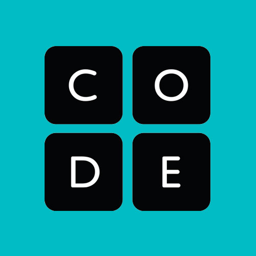
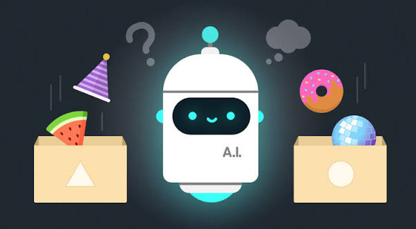

Uma plataforma voltada para o aprendizado de programação, informática e inteligência artificial.
Página Principal
Multiplas Linguagens

Website aberto

Raciocinio Lógico
Uma plataforma voltada para o aprendizado de programação, informática e inteligência artificial.
Página Principal
Multiplas Linguagens
Website aberto
Raciocinio Lógico
A plataforma CodeAi oferece conteúdos voltados principalmente para o aprendizado de programação, informática e tecnologias relacionadas à inteligência artificial. Por meio de vídeos, tutoriais e outros materiais educativos, os usuários podem conhecer diferentes conceitos e ferramentas, permitindo que desenvolvam seus conhecimentos de maneira gradual e acompanhem exemplos relacionados aos conteúdos apresentados.
A CodeAI também apresenta conteúdos relacionados ao uso da inteligência artificial e às suas aplicações na área de tecnologia. Além dos conhecimentos técnicos, a plataforma aborda informações sobre o mercado de trabalho e preparação profissional, permitindo que os usuários tenham contato não apenas com os conceitos de programação, mas também com diferentes possibilidades de utilização desses conhecimentos.
Por disponibilizar seus conteúdos de maneira acessível e gratuita, a CodeAI pode ser utilizado principalmente por pessoas que estão iniciando seus estudos na área de informática e desejam conhecer diferentes conceitos e tecnologias. A plataforma também pode servir como recurso complementar aos estudos, oferecendo materiais que auxiliam na exploração da programação, da inteligência artificial e de outros temas relacionados à tecnologia.

O funcionamento da CodeAI é baseado na disponibilização de conteúdos educativos relacionados à programação, informática e inteligência artificial. A plataforma reúne diferentes materiais, como vídeos, tutoriais e recursos de aprendizagem, permitindo que o usuário escolha os conteúdos de acordo com seus interesses e avance pelos assuntos de maneira gradual.
Durante o aprendizado, o usuário pode acompanhar as explicações apresentadas nos materiais e conhecer conceitos, ferramentas e tecnologias utilizadas na área de informática. Os conteúdos procuram apresentar os assuntos de forma acessível, permitindo que o estudante tenha contato tanto com conhecimentos básicos de programação quanto com temas relacionados à inteligência artificial e suas aplicações.
Além dos conteúdos técnicos, a gCodeAI também apresenta informações relacionadas ao mercado de trabalho e à preparação profissional. Dessa maneira, a plataforma não se limita à apresentação de conceitos de programação, mas também busca mostrar como os conhecimentos adquiridos podem estar relacionados às oportunidades e às diferentes áreas de atuação dentro da tecnologia.
Por utilizar diferentes formatos de conteúdo, a CodeAI pode ser utilizado de maneira complementar aos estudos. O usuário pode consultar os materiais para aprender um novo assunto, revisar conceitos já estudados ou conhecer novas tecnologias, utilizando a plataforma como um recurso de apoio durante sua formação na área de informática.

O CodeAI disponibiliza conteúdos voltados ao aprendizado de programação e informática, permitindo que os usuários conheçam diferentes conceitos, linguagens e tecnologias utilizadas na área.
A plataforma também aborda temas relacionados à inteligência artificial, apresentando conceitos e informações sobre suas aplicações no campo da tecnologia.
O CodeAI utiliza vídeos, tutoriais e outros materiais educativos para apresentar os conteúdos de forma acessível, permitindo que o usuário acompanhe explicações e exemplos durante seus estudos.
Além dos conteúdos técnicos, a plataforma apresenta informações relacionadas ao mercado de trabalho e à preparação profissional, aproximando o aprendizado das possibilidades de atuação na área de tecnologia.
Para os estudantes, o CodeAI oferece conteúdos voltados ao aprendizado de programação, informática e inteligência artificial. A plataforma disponibiliza materiais educativos que permitem conhecer diferentes conceitos e tecnologias, podendo ser utilizada tanto por pessoas que estão iniciando seus estudos quanto por usuários que desejam ampliar seus conhecimentos na área.
Entre os recursos disponibilizados estão vídeos, tutoriais e materiais educativos, que apresentam os conteúdos de maneira acessível e permitem acompanhar explicações sobre diferentes assuntos relacionados à tecnologia. Essa variedade de formatos possibilita que o estudante explore os temas de acordo com suas necessidades e avance gradualmente em seus estudos.
A plataforma também aborda conteúdos relacionados à inteligência artificial, permitindo que os usuários tenham contato com conceitos e aplicações dessa área. Dessa forma, o CodeAI amplia os assuntos estudados para além da programação tradicional, apresentando tecnologias que possuem crescente importância no desenvolvimento de soluções computacionais.
Outro aspecto presente na plataforma é a abordagem de temas relacionados ao mercado de trabalho e à preparação profissional. Com isso, o CodeAI pode funcionar como um recurso complementar aos estudos, ajudando o usuário a conhecer diferentes áreas da tecnologia e a compreender possíveis caminhos para continuar sua formação.